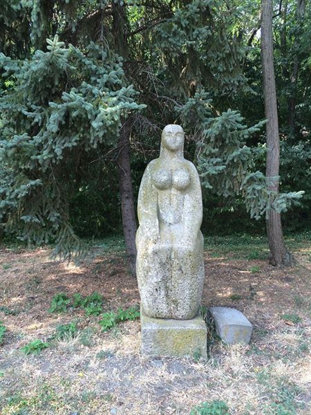
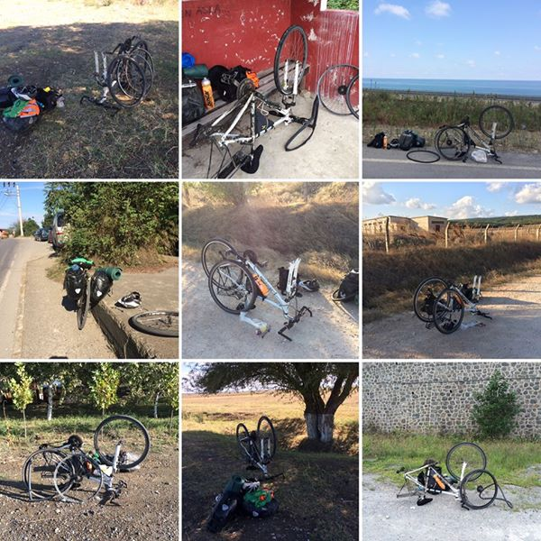
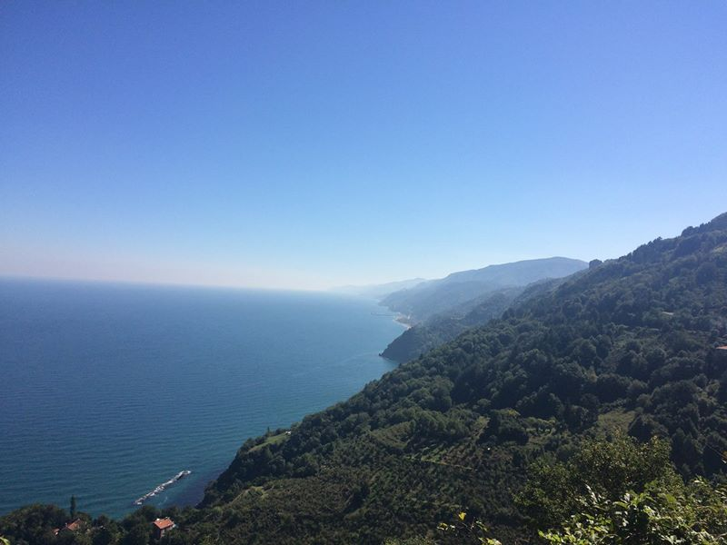
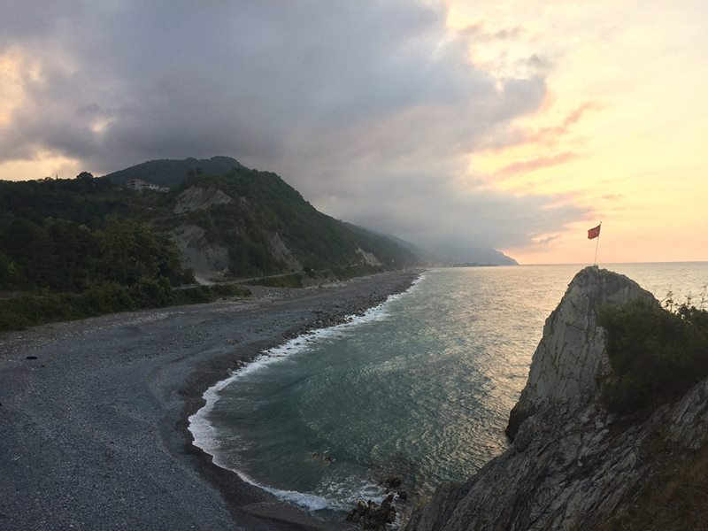
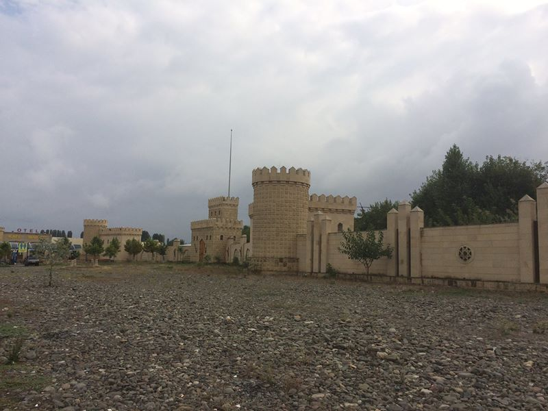
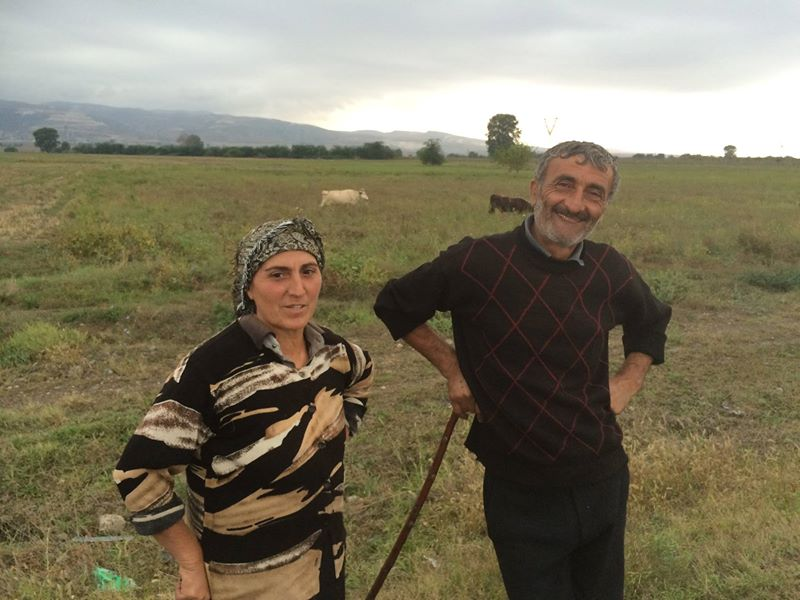
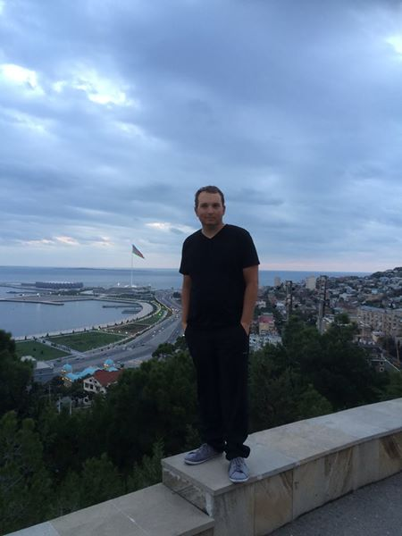

Z Bulharska do Ázerbájdžánu na kole (4. cesta)
Moje doposud nejnáročnější tour přes Bulharsko, Turecko, Gruzii a Ázerbájdžán.
Nový půlrok, nový úlet. Čtvrtá část cesty kolem světa na kole je tady! V roce 2014 to bylo z Česka do Itálie (http://do-italie.jdem.cz/, o rok později z Itálie do Řecka (http://do-recka.jdem.cz/, letos na jaře z Řecka do Turecka (http://do-turecka.jdem.cz/ a teď z Bulharska přes Turecko a Gruzii až k ropným věžím do Ázerbájdžánu. Prý je mají lidi v Baku i na zahradě. TO MUSÍM VIDĚT!
„Jen přes mojí mrtvolu,” zaznělo nadšeně příbuzenstvem, když jsem řekl, že chci odletět do Istanbulu. V následné těžké bitvě se mi podařilo vybojovat alespoň 350 km vzdálené letiště v bulharském Burgasu slibem, že se istanbulskému letišti, dějišti nedávného teroristického útoku, obloukem vyhnu.

Zhubni, nebo zhebni. Přes 94 kg (na 173 cm výšky nejsou úplně, hm, typické parametry cyklisty, a tak první kilometry mají vždy jediný cíl: přežít. Za celou tour jsem někde poztrácel 12 kg. Tady jsem závěr první bulharské etapy vydýchával při pozorování závodů lodiček.
Roviny jsou ale pro holčičky, takže jdeme rovnou do bulharských hor. Vše fajn, až na jednu drobnost …
Stovky bzučících mušek na každém kroku! V některých místech je bylo tolik, že jsem neviděl ani vlastní ruku, protože byla oblepená muškami. Celou noc jsem se pak budil s pocitem, že kolem mě pořád něco bzučí.
Typický Balkán. Jakmile se někde postaví nová značka, děcka berou zbraně a jdou si na ni zastřílet.
Poslední připomínka křesťanské kultury před vjezdem do muslimského Turecka.

A jsme v Turecku, v zemi s největší koncentrací kadeřnických a holičských salónů na metr čtvereční. Jsou snad v každé ulici. První večer jsem prošel kolem 7 salónů, než jsem našel první restauraci. Mladí muži (ženy jsem nikde neviděl tráví večery buď popíjením čaje, nebo u kadeřníka.
Je 6 ráno, takže dobré ráno. V muslimských zemích probíhá 5x denně svolávání k modlitbě, to první často už kolem 5 nebo 6 ráno. Je to něco jako u nás zkouška sirén, jen se ke zpěvu z amplionů přidávají i vyjící psi a člověka to vždy spolehlivě probudí.
Po 4 dnech cestování konečně Istanbul, Hagia Sofia, přibližně hodinu před půlnocí. Vlevo foto z poslední etapy před půl rokem, vpravo začátek nové tour.
Hagia Sofia, jedna z nejúchvatnějších staveb na světě.
A hned vedle si děti hrají na teroristy. Holčička se samopalem běhá a dělá, že střílí ostatní děti. Ti se snaží schovat, případně simulují zásah a padají.
Nastane-li požár, pak při hledání únikového východu nesledujte šipky. Ukazují směrem do Mekky, ne k východu!
Cesta do Asie. Bosporský most spojující Evropu a Asii je bohužel pro cyklisty zavřený. Kajak jsem nechal doma, takže musím trajektem.
Život v Turecku není pro psy jednoduchý. Pokud chtějí do boudy, musí si do ní doplavat.
Krajinky podél moře.
Výkvět koupelnového průmyslu. Turecké záchody a dvě sprchové hadice, z jedné teče vařící voda, z druhé ledová. Vytoužená vlažná se bohužel spojením nevytvoří, stále je to voda ledová a vařící.
Ale ne všechno je v Turecku postavené na hlavu!
Tak třeba o tom, jak se chovat k cizím lidem, o tom by mohli Turci přednášet. Tady jsem zrovna projížděl kolem jednoho starého pána, když ucítím zatáhání za dres. Zastavím, podívám se a vidím, že starý muž vytahuje z kapsy jablko, důkladně ho očistí a daruje mi ho.
Nebo taková lavička, to je vám opravdu nebezpečná věc. Jakmile se posadíte, máte asi 3 minuty, než vám přinese náhodný Turek první čaj. Pak druhý. A pak třetí. Dál už se ten den nedostanete. V Turecku odpočívat rychle!
A platí to třeba i pro benzinky. Tady jsem chvíli odpočíval a koupil si k tomu Coca Colu a tyčinky. Za chvíli ke mně přišel jeden Turek a donesl mi čaj. Poté ze námi přišel i zbytek obsluhy benzinky a jako dárek jsem od nich dostal jeden bonbon.
Turci často tráví svoje volno na pikniku. Usadí se někde za stromy, rozdělají prostěradlo a konzumují čaj a ovoce a zeleninu. Jednou se mi stalo, že jsem zrovna odpočíval po náročném kopci a najednou mě vyděsil zvuk z okolního křoví. Pak jsem zjistil, že tam piknikuje turecká rodina, její členové mě pozorují a u toho přežvykují jablka.
„Tyhle duše neprorazí ani hřebík,” tvrdili mi Australané, když jsem si v jejich buši kupoval supersilné duše, které jsem nasadil i pro Turecko. A měli rozhodně pravdu, nic je neprorazilo! Místo toho se u obou utrhly ventilky.
Ostatně i na klasické defekty byl tento výlet pestrý. Raněné duše jsem přestal počítat u čísla 10.

Z pohledu turisty je jedna z nejlepších věcí na Turecku to, že v domácnostech neteče pitná voda. Zní to divně, ale je to tak. Znamená to totiž, že je každých pár set metrů nebo několik málo kilometrů studna s pitnou a chladnou vodou.

„Čerstvě vybetonováno, nevstupovat!”
Loděnice v Ereğli.
Nejlepší penzion, ve kterém jsem kdy byl. Vana a postel v jedné mistnosti. TO CHCI DOMA!
Stezky a parkoviště pro kola v Ereğli.
Turci hrají hooodně často různé deskové hry. Všude. Kdykoliv. A v jakémkoliv věku. Často v restauracích a kavárnách není nikdo jiný než hráči.
Tady v Ereğli mají i podobné hrací stoly podél pobřeží. Večer jsem se tady posadil s cílem slízat zmrzlinu, když si ke mně přisedl mladý Turek s tím, že si něco zahrajeme.

„Dobrý den, můžete mi prosím poradit, jak se dostanu do … a jo, pardon, vy jste z trubek.”
Kam na jídlo? V evropské části Turecka jsem chodil spíše k Velké mámě, v asijské pak k Velkému tátovi.
Největší turistický problém v Turecku je komunikace, protože Turci mluví jen turecky. Přitom měli všichni ve škole angličtinu! Problém je v tom, že jim nikdo na začátku neřekl, k čemu jim bude dobrá, takže se ji ani nikdo pořádně neučí. Tohle je třeba velký rozdíl mezi námi a Turky - jim chybějí sny a ambice.
Tady na fotce bojujeme s Google překladačem.
Jednou večer jsem si kvůli problémům s komunikací objednal dvě večeře. Jak je to možné? Sám nevím, ale doufám, že nám to jednou historici objasní.
Aby se to už nestalo, začal jsem se tady intenzivně učit turecky. Ale jindy než za jízdy na to nebyl čas.
Není to ale moc bezpečné. Měl jsem mnohem méně času na to, abych se v lepším případě vyhýbal želvám na cestě …
… a v horším případě padajícím náklaďákům.
Děti 8- jsou jediné bytosti, se kterými se dá v Turecku dobře komunikovat, protože mají angličtinu ve škole a nepřemýšlí, zda jim k něčemu bude. Tady jsem přijel do penzionu a snažil jsem se s majitelem domluvit, ale moc se nám to nedařilo, dokud se někde tam ze zdola neozvalo „I speak English!” a něco malého, sotva to bylo vidět, nám překládalo komunikaci. Mohl jsem pak spát tady v tom pokoji. Kromě růžové barvy mi vadilo i to, že nešlo zamknout a pořád za mnou někdo chodil, na noc jsem se musel zabarikádovat.
Takže jsem pak raději spával na pláži, když bylo hezky. Je to fajn! Dokud se člověk jednoho rána neprobudí a to první, co vidí, je velká hlava psa, který zrovna provádí analýzu člověčího obličeje.
Všichni mi říkali, že mě v Turecku okradou, ukradnou nebo alespoň zabijou. Něchtěl jsem to Turkům tedy moc komplikovat, takže jsem přespal kousek od šibenice.
Ve městě duchů.
Spaní u vody.
A mohl jsem ráno takhle pozorovat východ slunce.
V Turecku se při vjezdu do obce uvádí i počet obyvatel, který se neustále mění, takže se cedule přepisují. Praktické.
Pobřeží Turecka poprvé.
Pobřeží Turecka podruhé.
Pobřeží Turecka potřetí.

Kolem pobřeží jsou neustálá 10+% stoupání a klesání. Je to někdy spíše horolezectví než cyklistika. Nelze se tedy divit, že to občas nějaký cyklista nervově nezvládne a ve slabší chvilce značku označující další prudké stoupání vyrve a zahodí.
„Jak dlouho ještě tahle stoupání budou? Tak 60, 70 km?” ptá se udýchaně naproti přijíždějící pán v polské košulce. „Spíše tak 600, možná 700 km,” odpovídám. Jeho vytřeštěný výraz jsem se snažil korigovat doplněním, že je to tady ale fakt pěkné. Jen mávl rukou a beze slov odjel.
Některá místa v Turecku vypadají opravdu hezky!

Ale už méně, když popojde fotograf trochu dále a zjistí se, že musel stát na hoře odpadků, protože je to jediné místo, odkud odpadky nejsou vidět.
Protože odpadky jsou v Turecku všude kolem cest:-(
A když už jich je opravdu hodně, shromáždí se před barák na jednu hromadu a zapálí se.
Pták.
A jsme skoro na hranicích. Cesta do Gruzie vede přes několik tunelů. Průjezd tunelem je výborný zážitek, obzvláště, pokud vás předjíždí svatební kolona a všichni se rozhodnou, že vás pozdraví troubením.
Takže díky za vše, Turecko, bylo mi u tebe skvěle! Měj se fajn a někdy se zase uvidíme.
A jsem v Gruzii! Na hraniční kontrole jsem ale musel strávit dvě hodiny a projít i přes rentgen. Dlouhé chvíle čekání jsem si tak krátil tím, že jsem okolní Turky a Gruzínce učil českou větu „strč prst skrz prs”, aby se taky něco užitečného naučili i oni ode mě.
Levitující kámen v Batumi.
V Gruzii zrovna vrcholila volební kampaň. Její součástí je i tapetování ulic portréty kandidátů. Z obou stran a rovnou ve dvou řadách, pro osoby vzrůstem malé i velké. Kamkoliv se člověk podíval, viděl vždy portrét kandidáta. Takové nenásilné.
Domky v horách.
V Turecku i na celém Kavkaze jsou oblíbené maršrutky, malé autobusy, které nemají jízdní řád a zastavují tam, kde zrovna chtějí cestující. Někdy jsou ale tak narvané, že cestující musí sedět v oknech.
Krajinky.
Gruzie. Země s největším počtem rozestavěných mostů na světě.

Chcete vidět Golden Gate Bridge, ale nechcete utrácet za letenku do San Francisca? Jeďte do Gruzie!
Typické gruzínské obchody podél silnic.
V Gruzii se nepoužívá latinka, mají vlastní písmo. Nemám vůbec tušení, za co jsem platil.
V Gruzii se ale člověk domluví docela dobře, protože tam hodně lidí mluví anglicky. A když ne, vždy existuje kouzelné sousloví „Petr Čech”, což v překladu do turečtiny, gruzínštiny i ázerbájdžánštiny znamená: „Dal bych si čaj nebo vodku, pozveš mě?”
Mimochodem, až tady jsem docenil, jak velká osobnost Petr Čech je. Já fotbal nesleduju, a tak jsem ho vlastně spíše ignoroval, ale v zemích jako Turecko zná více lidí ho než celou Českou republiku. A občas jsem měl pocit, že podle něj posuzují i mě, protože když jsme ze stejné země, předpokládají, že se asi budeme chovat podobně. A protože je Petr mimořádně pozitivně vnímaný, přistupovali ke mně tak i ostatní. Čechíno, máš u mě hektolitr čaje!
Každá země je úplně jiná. V Bulharsku mě všichni ignorovali. V Turecku mě pořád zvali na čaj. V Ázerbájdžánu se s pozváním netrápili, rovnou mě popadli a dotáhli na jídlo, i když jsem neměl hlad. A v Gruzii mě všichni pozorovali. Stáli a dívali se. Nehnutě. Třeba 10 minut. A nepromluvili. Někdy jsem to nevydržel a začal se na ně dívat taky. Stáli jsme naproti sobě dlouhé vteřiny a hleděli si do očí. Kolem nás probíhal okolní svět, ale nám to bylo jedno. V tu chvíli jsem tam totiž pro nás byli jen my. Pak jsem to nevydržel, vyfotil si je a jel dál. Jestli nezemřeli, stojí tam dodnes.
Pro celý Kavkaz nicméně platí extrémní pohostinnost. Tady mě starší gruzínský pár pozval domů na velký oběd, malou vodku a střední množství domácího vína.
Což se hodí, protože když jsem si chtěl třeba tady zajít do restaurace na jídlo, byly tam takové krávy, že jsem šel raději dál.
Krávy jsou v Gruzii mimochodem úplně všude. Dálnice se od silnice první třídy odlišuje hlavně v počtu krav na silnici, na dálnici je jich méně, takže je to tam bezpečnější.
Krávy se používají i jako sekačky fotbalových trávníků. Ale nemyslím, že je to dobrý nápad, protože po nich všude zůstávají … ale víte co, to je vlastně jedno. Pojďme raději na další fotku.
Roztomilí pejsci jsou problém v severním Řecku, ale v Turecku a dále už ne, protože je tam lidi nechovají jako bezpečnostní systém. Na Kavkaze je hodně psů, ale ti, jsou toulaví, většinou se bojí a utečou.
Silnice I. třídy, jak se tady pompézně říká tankodromům.
Nejoblíbenější auta v Gruzii? Jednoznačně Lady! Jsou staré i 40 let.
Kostel.
Alkohol je v Gruzii všude. Pokud si chcete v obchodě s potravinami něco koupit, musíte nejprve projít kolem regálů s alkoholem. Dokonce i na řadě benzinek to tak je. Ani žádný obchod s dětskou výživou se bez vitríny s alkoholem neobejde.
Po náročeném dni odpočívám, když se podívám vedle a nevěřícně zírám. Jsem vedle továrny, na které jsou ještě komunistické znaky se srpem a kladivem.
A o kousek dále i sochy samotného Stalina.

Jsem totiž ve městě Gori, kde se Stalin narodil. Je tady po něm pojmenovaná hlavní ulice nebo park. Prozkoumat taky můžete vlak, kterým cestoval.
Nebo dům, ve kterém se narodil. Aby domek přežil generace, postavili kolem něj ještě další barák, který ho chrání.
A je tady samozřejmě i muzeum o jeho životě.
„Vlast tě volá!” Takhle se sověti svolávali k Velké vlastenecké válce.
Pokud se vám v Gori líbilo, můžete si v obchodě se suvenýry koupit něco hezkého na památku.
Klíčenky, propisky, trička nebo jen hrníček se Stalinem.
Pro mlsné jazýčky je tady i nanuk se sovětskou příchutí.
Byl jsem z toho tak rozhozený, že jsem pak místo do Tbilisi odbočil směrem do Ruska na Vladikavkaz. Proboha zpět!
„V řadě za sebou, dva čuníci jdou …” Cestou z Gori jsem si broukal sovětskou hymnu, jakmile jsem viděl tyhle čuníky, tak už jen Nohavicův hit. Text obou skladeb je vlastně velmi podobný.
Ahoj Tbilisi!
Katedrála Nejsvětější Trojice, hlavní dominanta hlavního města.
¯\_(ツ_/¯
Most míru.
Orloj.
Výborná věc na Tbilisi je to, že je tam zadarmo internet. Stačí se připojit k síti „Tbilisi Tě miluje”. Standardně totiž jedno načtení Facebooku z Gruzie přes datový tarif u T-Mobile stojí skoro 800 Kč, za což v Gruzii seženete v pohodě tříhvězdičkový hotel na víkend i s jídlem.
Jediný strom široko daleko na cestě na hranice s Ázerbajdžánem.
Poslední dopravní značení před vjezdem do Ázerbajdžánu, Gruzínci vám přejí hodně štěstí, protože ho podle nich budete v Ázerbajdžánu potřebovat. Mezi zeměmi na Kavkaze existuje docela velká nevraživost, především mezi Ázerbajdžánci a Armeny. Ázerbajdžánci si myslí, že se vám muselo stát něco strašlivého, když jste museli jet přes ten flek na mapě. Při žádosti o vízum do Ázerbajdžánu musíte i prohlásit, že jste na některých územích Armenie nikdy nebyli, jinak vás tam nepustí. A pokud se pokusíte do Ázerbajdžánu propašovat mapu, kde by byl Náhorní Karabach zaznačen jako arménské území, Bůh s vámi.
A jsem v Ázerbajdžánu! Na hranicích mě zastihla cca 500 metrů dlouhá kolona. Už jsem se připravoval, že tam budu kempovat přes noc, když za mnou přišel nějaký Rus a naznačil mi, že to jde zařidit. A taky že jo. Za chvíli za mnou přišli vojáci a poručili mi, že mám jít za nimi. Pak následovalo asi 7 kontrol. Kontrola víza, dotazy na údaje v pase, focení, natáčení na kameru, několik krátkých pohovorů atd. Až jsem došel na konec, kde poslední vojáci otevřeli ručně velkou bránu a vpustili mě do své země, už 15. na trase z Česka.

A hned po několika prvních metrech jsem začal tušit, že jsem v tak trochu jiné zemi. Zastavilo mě první auto, kolem kterého jsem projel. Tlustý muž na mě něco volal a na dálku mi poslal několik vzdušných polibků. O chvíli později mě zase zastavili tito lidé a nabídli mi nocleh.

A o pár km dále mě zase zastavili další Ázerbajdžánci a nechtěli mě pustit dále, dokud mi nekoupí večeři. Byl jsem už slabý a nemohl jsem se bránit, takže jsem vybojoval alespoň to, že sním maximálně 3 párky. I malá vítězství se počítají.
Jídelní lístek. Nemám tušení, co je co. Takže jsem prostě někde zabodl prst a napjatě čekal, co přinesou.
A většinou to stálo za to! Jedna specialita venkovského Ázerbajdžánu je to, že když jsem si objednal něco na pití, přinesli mi vždy celou litrovou láhev. U nás v restauracích naopak často žasnu, jak malé láhve se vůbec vyrábí. Mimochodem, tenhle oběd stál v přepočtu 60 Kč, v Ázerbajdžánu je velmi levno.
Snídaně s klubem FK Karabach, za který hraje i několik ázerbajdžánských reprezentantů. Hned potom odlétali do Itálie na zápas o Ligu mistrů. Prohráli, snad to nebylo tím, že jsem trenérům zasedl jejich stůl.
V Ázerbájdžánu se mi nesmírně líbila architektura. Všechno vypadá jako hradby. Tady je „cedule” označující vjezd do nového okrasu.
Nebo monstrózní vjezdy do větších měst.
Památník.
Krajinky.
Místní hřbitov.

Tady mě pozvali farmáři na jídlo. Chovají tady slepice, každá má 1x1 metr prostoru.
Pozor! Ázerbájdžánci se nebojí nasadit vlastní život, aby vás zastavili, pokud vám mohou něco darovat. Pokud nic nemají, běží do obchodu a něco koupí, pak vám to darují a slušně poděkují, že vám to mohli dát. Většinou ovoce a zeleninu.
Ale už jsem dostal i rybu. Živou. Občas jsem měl pocit, že jsem úplně první turista, který kdy do Ázerbájdžánu přijel.

Jindy mě předjelo auto, zastavilo, všichni vyskákali a s každým jsem si musel udělat selfie. Tohle jsem absolvoval během jednoho dopoledne třeba 10x. V lepším případě se mě vždy zeptali, zda se můžeme vyfotit.
V horším případě mě prostě někdo popadl a dotáhl domů, jako to bylo v případě Xanlera. Cestou k jeho domu jsme se museli zastavit u každého souseda a po cestě mě objímal a líbal na tvář (ne snad že bych chtěl, to se tady dělá bohužel i mezi muži. U něj doma nás pak vyfotili jeho přátelé, nedovolili mi ani sundat reflexní vestu.
Xanler mi dal svoje jídlo a běžel do obchodu pro vodku. Do té chvíle jsem si myslel, že muslimové alkohol nepijí, ale neplatí to zjevně vždy. Vypili jsme celkem 4 půlky vodky, po každé jsem chtěl odejít, ale Xanler mi to nedovolil, protože mi musel ukázat ještě další kouzelnický trik.
Nebylo to jednoduché, ale přibližně po dvou hodinách se mi podařilo utéct na toaletu a získat trochu času. Jak se odtud dostat? Kolo bylo asi 15 metrů od záchodu. Dokážu pro něj doběhnout, aniž by mě Xanler zpozoroval? A jak se dostanu z vesnice dál? Kolem je mnoho Ázerbájdžánců, kteří nebudou váhat s pozváním. Jsem v pasti! To je konec!
Dal jsem do toho všechno a nakonec se mi to podařilo. Dostal jsem se až za vesnici, ukryl jsem se v křoví a snažil jsem se vystřízlivět. Usnul jsem. Když jsem se probudil, byla už tma, přesunul jsem se proto na lepší plácek, vytáhl spacák a pokračoval ve spaní dále. Ráno mě až probudil pasáček a jeho 20 krav, které šel vyvenčit.
Ázerbajdžán je muslimská země, 97% obyvatel jsou muslimové, nejde to ale vůbec poznat. Tohle byla první mešita, na kterou jsem po dlouhé době narazil. Svolávání k modlitbě zde není, slyšel jsem ho jen jednou v Baku. Lidé zde běžně pijí alkohol, jsou tady pivnice, hospody. Ženy se nezahalují, zahalené muslimky jsem viděl snad jen v Baku, na vesnicích ne. Ženy se mnou běžně komunikovaly a občas mě i oslovily, i když v mnohem menší míře než muži (v jiných muslimských zemích ženy cizí muže ignorují úplně.
Našel! Během poslední etapy jsem konečně našel ropné čerpadlo, tzv. kývajícího oslíka. Prostě takové to kladivo, co se hýbe a doluje se přes to ropa. Je nahoře na kopci.
Na ten nejbizardnější příběh jsem si ale musel počkat až na úplný konec. Ve 2 ráno, těsně před dojezdem do Baku, mi došlo pití, tak jsem se zastavil na benzince. Přišel za mnou muž z obsluhy benzinky a zeptal se mě, odkud jsem. Když jsem řekl, že ze země Petra Čecha, úplně se mu rozzářily oči. Popadl mě za ruku a o odvlekl mě do kanceláře u benzinky. Doprostřed mistnosti postavil židli a nakázal mi, abych se posadil. Stoupl si přede mě a začal se plácat do hrudi. Myslel jsem si, že už mám halucinace. Vysvětlil mi, že byl sovětský mistr v karate. Pak popadl moji levou nohu a začal ji masírovat. Pak i pravou. Pak mě propusil a já mohl namasítovaný odjet. Na památku mi pak na pár dní zůstala modřina, protože měl obrovskou sílu a malý cit.
Baku! Jsem tady. Po 35 dnech a téměř 3 tis. km jsem v cíli.
A o půl třetí ráno jsem dorazil i s čelovkou k hotelu. Poslední etapa měla 242 km. Po 4 vodkách včera? Not bad!
Baku je jedno z nejhezčích měst, ve kterém jsem kdy byl.
Uprostřed města je stará část obehnána hradbami.
Moderní stavby jsou pak okolo.
Heydar Aliyev Center ještě jednou z dálky.
V Baku je množství úžasných muzeí.
Nebo ruské kolo.
Budoucí dominanta Baku focená z ruského kola.
Mrakodrapy ve tvaru plamenů.
Stanice metra.
Podchody.
Všechno je neuvěřitelně čisté, protože snad v každé ulici je uklízeč, který hned zlikviduje každý drobek. Z podlahy se dá jíst.
V Baku se narodil Garri Kasparov, šachový velmistr. Na jeho počest jsou v některých ulicích velké šachovnice.
V centru Baku je dokonce pivnice Pragold, kde se čepuje jen české pivo.
Kuk!

A to je vše. Pokud vám album nepřišlo úplně debilní, můžete ho „zdílet” (tedy dát na zeď. Ázerbajdžánci mi potvrdili, že pokud bude mít tohle album alespoň 10 zdílení, přestanou líbat české muže. To se vyplatí.
Příští rok mě čeká nejdelší a zdaleka nejnáročnější tour. Začnu v Baku a poté severní cestou kolem Kavkazu a čtyřtisícovek do Gruzie a Arménie a dále do Íránu. Tam se budu muset nějak vyrovnat s náboženskou policií, zákazem používání Facebooku nebo s nemožností vybírat peníze z bankomatů. Poté přes Perský záliv lodí do Spojených arabských emirátů. Z Dubaje přes Abu Dabí do Ománu. Dále letadlem do Saudské Arábie a dále do Bahrajnu a Kataru (pokud se mi podaří získat do některé z těchto zemí vízum. Poté lodí do Kuvajtu. Tam nesmím vjet v době Ramadánu, protože pokud se ve dne člověk napije vody, následuje 30 dnů vězení. A poté letadlem do Jordánska a pak už je to jen kousek do Izraele a do Jeruzaléma ke Zdi nářků, kde budu naříkat.
Tak příští rok ahoooj!